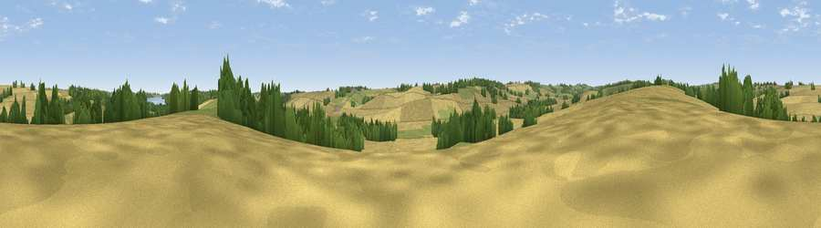

Viewpoint near Brooke
#39359 in England · top 70% of its area beats it · near Brooke · footpathWhere it is
The exact computed spot (SK 86125 04625). Click the marker for map links.
Public access: a public right of way passes within 26 m of this spot. Computed from Natural England's CRoW access layer and OpenStreetMap rights of way — not the legal definitive map. Always verify locally.
The view, rendered

A 360° render of this exact spot computed from the terrain model, tree cover and land cover — summer colours, afternoon light, calibrated against photographs of famous viewpoints. Real trees, hedges and buildings will differ in detail.
The panorama
Grey silhouette: terrain skyline in each direction (720 bearings, Earth curvature and refraction included). Dashed green: skyline with trees (+15 m) and buildings (+8 m) as obstacles. Blue strip: how far the ground is visible on each bearing.
Where the view opens
Wedge length = distance to the farthest visible ground on that bearing (vegetation-aware). Rings at 10, 25 and 50 km.
What fills the view
65% cropland · 25% grassland · 8% woodland ·
Angular shares of the visible panorama (visual magnitude), not map area. Landscape diversity 0.39 (0–1 Shannon).
Key numbers
More beautiful places nearby
The staircase of upgrades: each row has a higher view potential than everything closer. Driving times are estimates from straight-line distance, calibrated against real road routing — check an actual route before setting out.
| Place | Direction | Drive | Score |
|---|---|---|---|
| Viewpoint near Egleton | NNE · 2 km | ~5 min | 38.7 |
| Viewpoint near Belton-in-Rutland | WSW · 4 km | ~9 min | 43.4 |
| Viewpoint near Belton-in-Rutland | WSW · 5 km | ~12 min | 44.1 |
| Viewpoint near Allexton | SW · 7 km | ~15 min | 44.4 |
| Viewpoint near Horninghold | SSW · 8 km | ~16 min | 45.3 |
| Ranksborough Hill | NNW · 8 km | ~16 min | 47.0 |
| Viewpoint near Stoke Dry | S · 8 km | ~17 min | 47.5 |
| Robin-a-Tiptoe Hill | W · 9 km | ~17 min | 54.1 |
52.63255, -0.72889 · source: screening · position refined by local search. Computed location — check access rights before visiting.